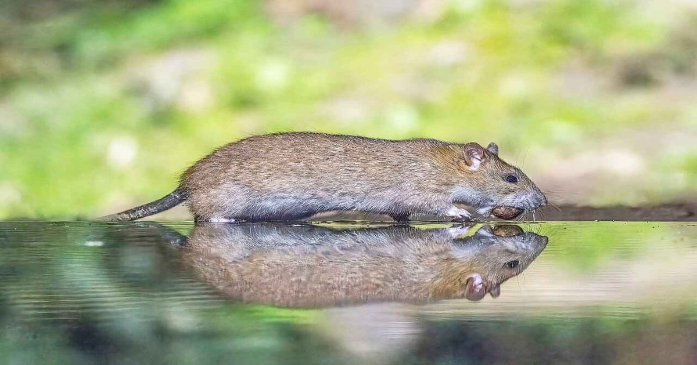

Галактические лучи навредили сердцу крыс, но только при «удлинении» их жизни
В последний десяток лет государственные космические агентства много рассказывали о том, что космическая радиация при полете к Марсу убьет или инвалидизирует путешественников.
Проблемой оказалось то, что эксперименты на животных с галактическим уровнем радиации показали обратное.
Американские ученые придумали способ, как решить вопрос: они стали облучать подопытных дозами, для получения которых им пришлось бы провести в космосе несколько жизней.